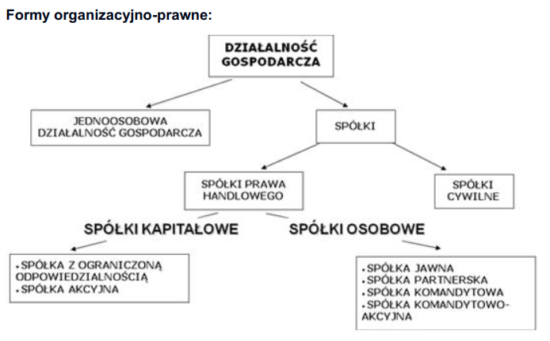

Skala podatkowa - 18%, ulgi podatkowe i rozliczenia z małżonkiem
Podatek liniowy - 19% dochodu
Karta podatkowa - zalezne od rodzaju dzialanosci, miejsca, ludnosci w danym miejscu itp
Ryczałt - kilkuprocentowe stawki

Cechy jednoosobowej działalności : 1 założyciel, rejestracja w CEIDG, zatrudnianie, niższe składki ubezpieczeniowe, Niewymagany kapitał założycielski
CEIDG jest wnioskiem o nadane NP (urząd skarbowy), Oświadczeniem o wyborze formy opodatkowania (urząd skarbowy), Zgłoszeniem płatnika składek ubezpieczeniowych (ZUS), Wnioskiem o REGON (urząd statystyczny)
W ciągu 7 dni od rozpoczęcia działalności gospodarczej przedsiębiorca musi dokonać zgłoszenia do odpowiednich ubezpieczeń społecznych : ZZA – zdrowotne, ZUA – zdrowotne i społeczne.
Działalność gospodarcza - działalność zawodowa, wykonywana w sposób zorganizowany i ciągły.
Przedsiębiorca - jest podmiot prawa, który prowadzi we własnym imieniu działalność gospodarczą (lub zawodową).
Zasady prowadzenia działalności gospodarczej - zasada uczciwej konkurencji przedsiębiorca powinien szanować
dobre obyczaje oraz słuszne interesy konsumentów. Ochrona przed zagrożeniem ludzkiego zdrowia, życia i moralności
publicznej.
Cel działania przedsiębiorstwa - przetrwanie (istnienie) na rynku, zapewnienie trwałej zyskowności firmy,
uzyskiwaniem przez niej płynności finansowej, rozwój firmy (ilościowy i jakościowy), pozyskanie nowych klientów i
utrzymania starych, pozyskanie nowych rynków zbytu.
PKD – wykaz wszystkich rodzajów działalności społeczno-gospodarczej na terenie Polski. Klasyfikacja 5-pozomowa obejmuje sekcje, działy, grupy, klasy i podklasy.
Działalność regulowana – działalność której wykonywane wymaga spełnienia określonych warunków.
Koncesja – akt upoważniający do prowadzenia określonej działalności gospodarczej.